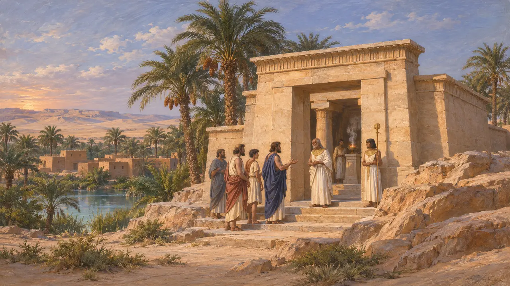
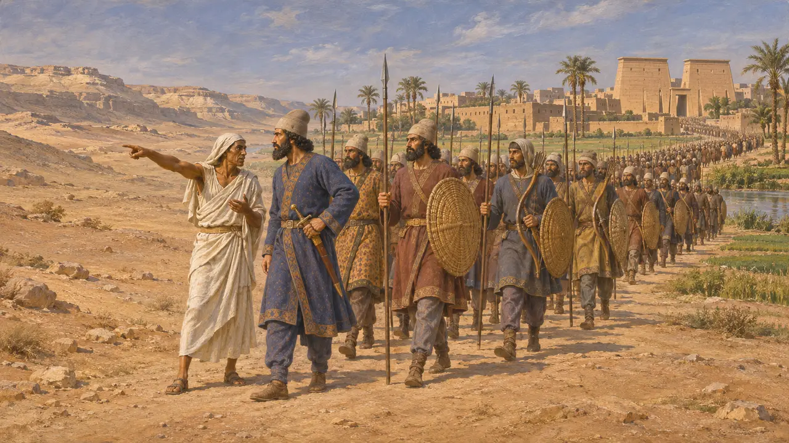
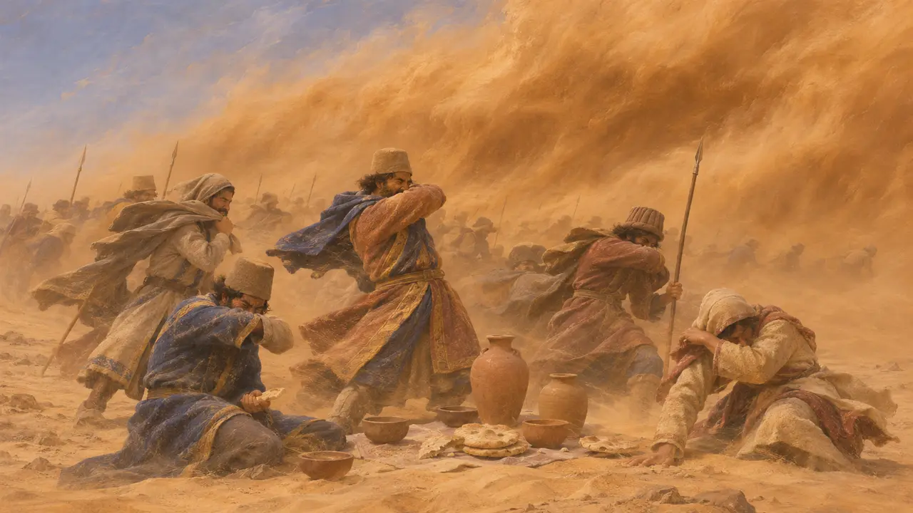
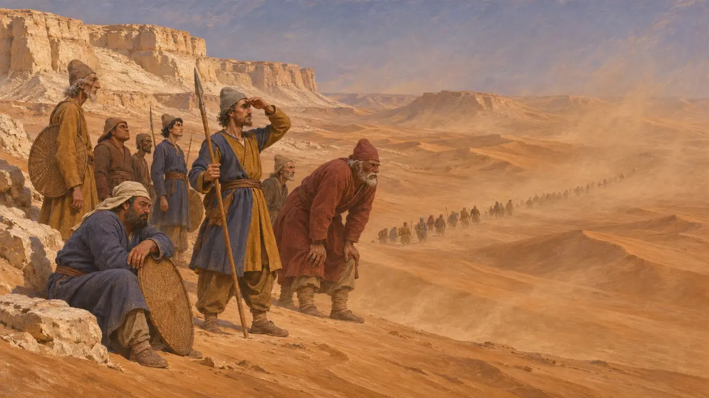
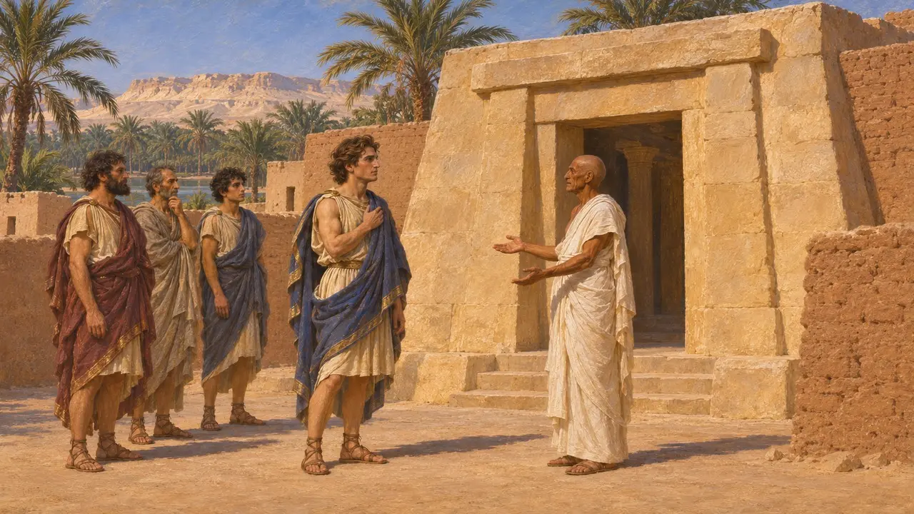

آمون (سيوة)
واحة الوحي في الصحراء الليبية غربي مصر، القرن السادس ق.م
كانت آمون واحة سيوة، موطن عرّافة شهيرة للإله آمون الذي ساوى اليونانيون بينه وبين زيوس. ويذكر هيرودوت أن قمبيز أرسل جيشًا ضدها من طيبة وأن الجيش اختفى في الرمال. أما ما جرى لتلك القوة فغير معروف، وما زالت الرواية موضع جدل.
في اللعبة: تذكر اللعبة آمون في الحولية وفي مقالات الأحداث، مثل المسيرتين إلى آمون وإلى إثيوبيا، ولكنه ليس مرحلة ولا شخصية ولا مكانًا له آلية خاصة به.

الواحة وعرّافتها
رواية قديمةيصف هيرودوت الأمّونيين بأنهم شعب يسكن الصحراء الواقعة غرب مصر، وفيهم معبد لزيوس، الذي يطابقه هيرودوت مع آمون المصري. وكان اليونانيون يستشيرون العرّاف في ذلك المعبد، وكان هيرودوت يعرف روايات يونانية عنه. وسيوة واحة حقيقية في الصحراء الغربية، وما تزال فيها أطلال معبد لآمون.
Herodotus 2.42

أمر قمبيز بالزحف
رواية قديمةيذكر هيرودوت أن قمبيز، بعد استيلائه على مصر، خطط لثلاثة مشاريع: ضد قرطاج، وضد الإثيوبيين، وضد الأمونيين. ويقول إن قمبيز أرسل خمسين ألف رجل من طيبة، يرشدهم أهل البلاد، لاستعباد الأمونيين وإحراق المعبد الذي يُستوحى منه الوحي. والرقم من رواية هيرودوت، ومن المرجح أنه مبالغ فيه.
Herodotus 3.17-3.25

الجيش المفقود
رواية قديمةيروي هيرودوت أن الجيش بلغ مكانًا يُدعى الواحة، ويُرجَّح أنه واحة الخارجة، ثم انطلق عبر الرمال. وبحسب الأمونيين، هبّت عليه ريح جنوبية عاتية وقت غداء منتصف النهار فدفنته، ولم يُرَ بعد ذلك قط. ويورد هيرودوت هذا على أنه روايتهم، ولا يذكر شيئًا أكثر يقينًا عن نهاية الجيش.
Herodotus 3.26

هل بلغ الجيش واحة سيوة؟
متنازع عليهلا يذكر أي نص فارسي أو مصري هذه الحملة، ولذلك تعتمد على هيرودوت وحده. ويقبل بعض المؤرخين أن قوة حقيقية ضاعت في الصحراء، بينما يشكك آخرون في أنها كانت متجهة إلى سيوة، بل في وقوع الحملة أصلًا. ويُشكَّك على نطاق واسع في الادعاءات الحديثة بالعثور على الجيش المفقود.
P. Briant, From Cyrus to Alexander, 2002

الشهرة اللاحقة للعرّافة
رواية قديمةاشتهر الوحي أكثر في عام 331 ق.م، حين زاره الإسكندر الأكبر، كما يروي أريانوس. وتلك الزيارة تقع بعد العصر الفارسي بزمن طويل، وتنتمي إلى قصة أخرى.
Arrian, Anabasis 3.3-3.4
المصادر
- Herodotus 3.17-3.26
- Herodotus 2.42
- P. Briant, From Cyrus to Alexander, 2002
- Arrian, Anabasis 3.3-3.4